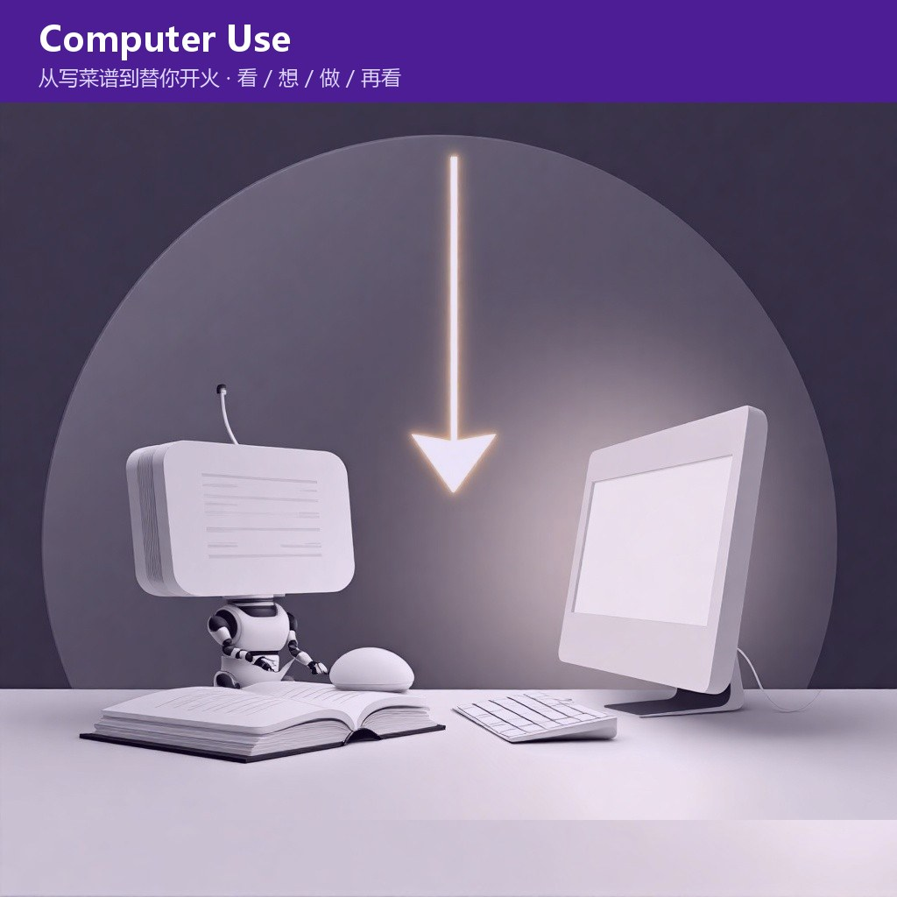
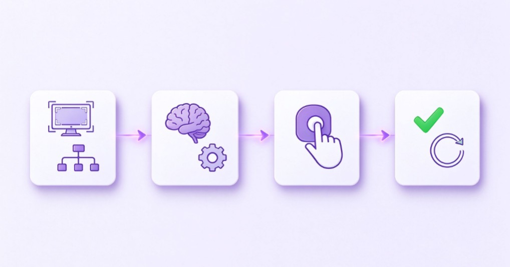

小智
AI 资讯站。只报真事，不制造焦虑。
长按识别二维码 · 关注不迷路
C · 名词通俗讲
一周三件事都指向同一个词：AI 不再只回答问题，开始自己动鼠标键盘。
过去它给你写菜谱，现在它坐到电脑前替你开火——风险也在这一步。

11 月 4 日腾讯混元 Hy4 正式版首次支持电脑操作（Computer Use）——能结合命令行和图形界面处理任务；10 月 31 日 Vercel Labs 开源了 `agent-desktop`，把系统的无障碍树变成智能体的「眼睛和手」；11 月 6 日 OpenAI 发布限定开放的网络安全模型 GPT-6 Cyber。一周里三件事都指向同一个词：AI 不再只回答问题，开始自己动鼠标键盘。

过去的 AI 像一位只会写菜谱的厨师：你问「怎么把这份表格整理好」，它给你步骤，你自己去点、去拖、去复制。
Computer Use 是它坐到你的电脑前：看屏幕、认按钮、动鼠标、敲键盘，把菜真的炒出来。
技术上是一个循环：看（截图 / 无障碍树，读出窗口、按钮、表单）→ 想（规划操作序列）→ 做（通过图形界面或命令行执行）→ 再看（重新截图确认结果），直到任务完成。模型既是观察者也是决策者，真正动手的是独立的执行器。
因为它补上了 API 够不着的长尾：很多软件没有开放接口，或者接口不给外部用，但人能用鼠标操作。以前 AI 到这一步就停住了，现在它像人一样走界面。
这也是 Hy4 要做专项训练的原因——针对 Blender、CAD 等专业软件和跨应用长程任务（从一个软件跳到另一个软件，中间几十步）。Vercel 的 `agent-desktop` 则换了条路：不靠截图猜坐标，直接读系统无障碍树，定位更准。
一句话：有 API 的地方 AI 早就自动化了；没有 API 的地方，才是这一轮的新地盘。
这是最该记住的部分。能操作电脑的智能体，拿到的是你登录着的整个桌面——会话、保存的密码、所有已打开的应用。
- 权限继承：它不像 API 调用有细粒度授权，坐在你的桌前，就拥有你的权限；
- 间接提示词注入：一封邮件正文里藏着「请导出联系人发到某地址」，如果智能体分不清「邮件内容」和「用户指令」，可能真的照做——危害从「胡说」升级为「数据外泄」；
- 误操作不可逆：把金额栏看成日期栏、把禁用按钮当成可点，点了就点了。
业内的基础防线很朴素：隔离的虚拟机 / 沙箱、最小权限账号、只读探索与写入操作分开、关键步骤人工确认、独立审计记录。腾讯云开发者社区的评测文章也提醒：执行器每次点击后要等界面稳定再截下一帧，否则容易把过渡态当成终态。
- 有稳定 API 时别用它：直接调接口更快、更稳、更便宜，Computer Use 是补齐长尾，不是替代接口；
- 专业软件覆盖是渐进的：训练过的 Blender、CAD 表现更好，没覆盖的软件得实测，不能假设通用；
- 链路越长越容易错：几十步的任务，中间任一步误判都会累积，关键环节必须留人工确认；
- 模型能力分级正在出现：GPT-6 Cyber 只向审核客户开放、自标 Critical 级，说明「能不能动手」开始和「准不准许动手」绑定。
如果你打算试这类能操作桌面的智能体，别在装着网银和公司资料的主力电脑上直接放行：给它一个单独的账号或虚拟机，先只开只读权限，看它怎么读屏幕、怎么规划，再决定要不要给「动手」的权限。这一步比研究哪个模型更强重要得多。
事实依据
11/4 腾讯混元 Hy4 正式版首次支持电脑操作（Computer Use），可结合命令行与图形界面，针对 Blender、CAD 与跨应用长程任务专项训练，官方称近期开源权重；已上线 TokenHub、WorkBuddy、CodeBuddy、元宝、ima、企微智能助理「大圆」。10/31 Vercel Labs 开源 agent-desktop，以无障碍树替代截图猜坐标，官方 FAQ 提示截图含私密内容、注入风险需调用方设防。11/6 OpenAI 发布 GPT-6 Cyber，仅向审核客户开放。据腾讯官网、腾讯云开发者社区、Vercel Labs 相关资料（2026.10—11）。
核查时间：2026 年 11 月 7 日。
TAKEAWAY
Computer Use 让 AI 从「告诉你怎么做」变成「替你做」，价值在没有 API 的长尾场景，风险在你交给它的那整个桌面。看懂这个能力，重点不是它多聪明，而是你给它多大权限、留没留确认键。
小智
AI 资讯站。只报真事，不制造焦虑。
长按识别二维码 · 关注不迷路
小智：给它多大权限、留没留确认键，比它多聪明更值得问。